Weekly Study Report — 2026-01-19
Source
C:\LabNote\90_Archive\ANSL-Undergrad-Research\내용정리PDF\Weekly Study Report_26.01.19_전유식.pdf· 22 pages · 30 images
ANSL Undergraduate Research → Research Direction
PDF에서 복원한 노트
같은 날짜의 PPT는 이후 다른 주차 작업 중 덮어써져 내용이 유실됐습니다. PDF가 원본이며 이 노트는 PDF에서 추출했습니다.
한일 / What I did
PI / PID 제어기와 Anti-windup — 3월 스러스터 포화 대응의 이론적 바탕
목차 / Contents
- 캡스톤 디자인 Simulink
- PI Control
- PID Control
- Anti-windup
기록 / Notes
캡스톤 디자인 Simulink
Simulink에서 벡터신호 보내기와 인덱싱
- mux를 이용해서 벡터를 만들수 있다.
- demux를 이용해서 벡터를 한 벡터를 여러 벡터로 분리할수있다. 하지만 인자 순서대로가 아니라 벡터를 인덱싱하고 싶다면? ➔ select 블록을 이용해서 [1 4] 이런식으로 인덱싱이 가능하다.
- 요소합은 sum 블록으로 가능하지만 합치려는 인자가 많은경우 sum of elements블록을 이용해서 요소합을 구할수 있다.
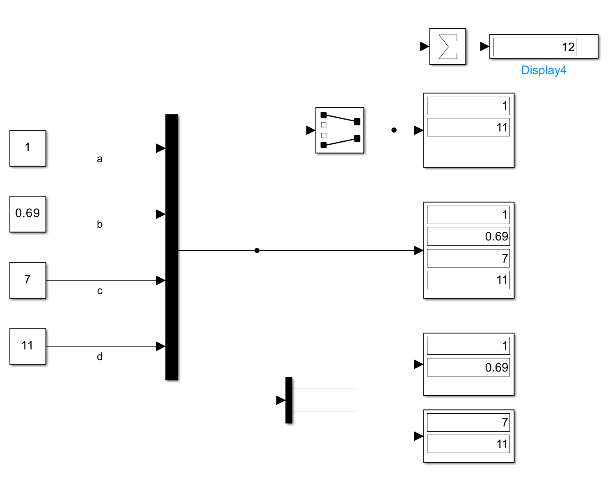
Subsystem
- subsystem을이용해 같은 시스템을 모델링한 모습
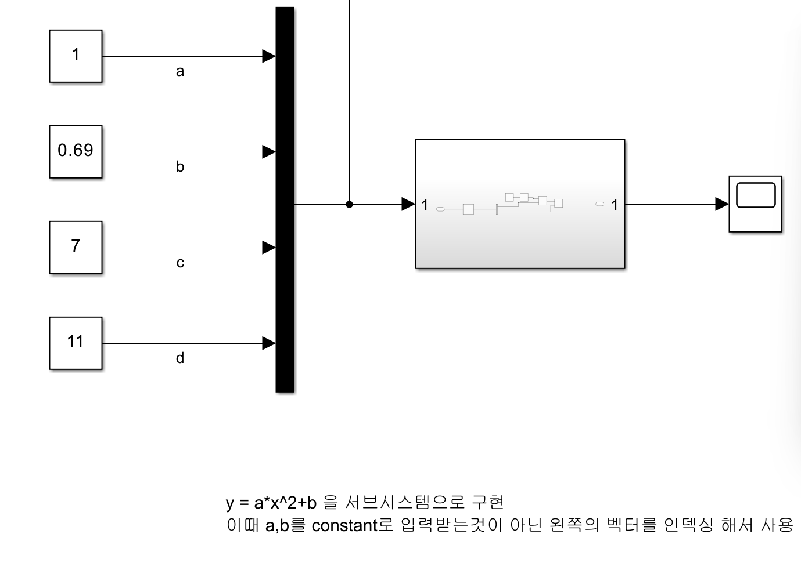
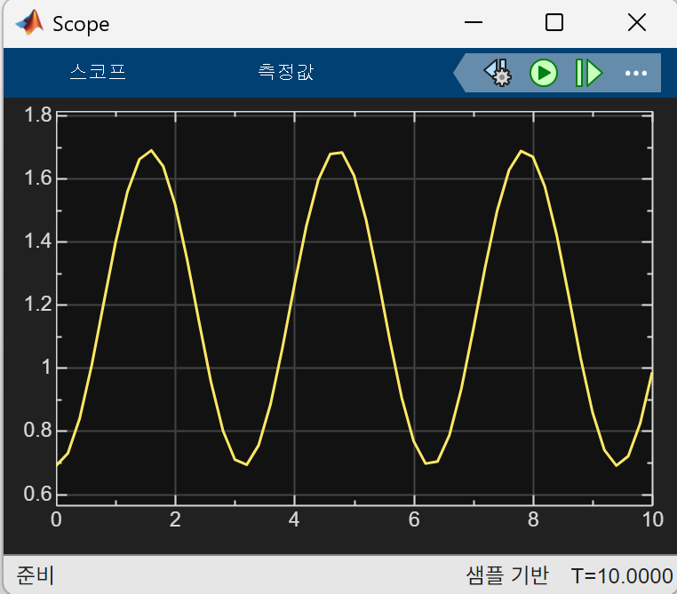
샘플링과 최적 Ts
개념 정리: Solver Step Size
손상된
01-05PPT에 들어 있던 샘플링 내용이 사실 이 주차 것이었다. 그 PPT 표지 날짜가2026.01.19로 찍혀 있던 것과 일치한다.
- 샘플링이란? : 연속신호 → 이산신호로 바꾸는 것 (가변스탭, 고정스탭과 무관, 하지만 제어성격에 따라 궁합이 존재할순 있음)
- 왜 하는가? : 디지털제어기는 연속신호를 계속 계산 할 수 없음. 연속시간이 아니라 매 ‘틱’을 계산한다
- 그럼 미분해서 미소시간으로 샘플링하면 연속신호랑 똑같이 나오는 것 아닌가? : 다양한 문제들이 발생함 i) 계산량이 늘어나므로 최적화에 불리 ii) 노이즈 문제 발생
- 노이즈란? : 신호가 들어올 때 원래신호에 섞여서 흔들림 또는 오차성분이 들어온다. (센서측정값, 전압, 계산신호 무관하게) 수식으로 보면 y(t) = x(t) + n(t) 이고, 미분을 하게 되면 수식은 다음과 같다. 미분을 하면 Ts가 매우 작아지게 되므로 마지막항 (노이즈항)이 커지므로 정확한 결과를 얻을 수 없다. 정리하면 Ts 감소 → 미분 근사는 좋아지지만 노이즈 증폭으로 인한 정확도 감소 Ts증가 → 노이즈는 감소하지만 미분 근사 정확도 저하
연속시스템과이산시스템
- 연속시스템과 이산시스템디지털제어는 연속신호를 받을 수 없기 때문에 이산신호로 변환해서 입력해야 한다.
- 정보 오버레이를 이용해 색으로 이산시스템과 연속시스템을 구 분 할 수 있고, 위상 지연이 포함된 이산시스템 사인함수를 나타냈 다.
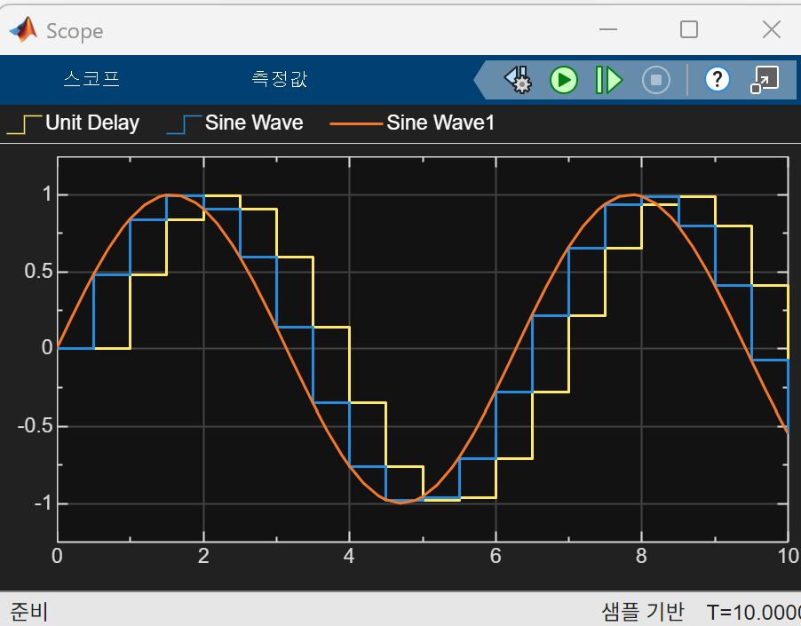
MATLAB에서 전달함수를 입력하여 보드 플롯 만들기
- Sys1과 비교 했을때 sys2의 시간상수(10)가 더 크기 때문에 step response에서 더 빠르게 반응 하는것을 볼 수 있다.
- 1차 시스템에서 대역폭은 bw = 1/(시간상수)로 나타낼 수 있고 각시스템의 시간상수는 1,10 이므로 sys2의 대역폭이 더 크다. 따라서 sys2의 반응속도가 더 큰것을 검증 할 수 있다.
- tr은 2.2/(bw) 로 정의되므로 sys1은 2.2 / 1 = 2.2s, sys2는 2.2 / 10 = 0.22s, 10배 차이가 나는 것을수식으로 확인할 수 있고 step response에 표시 하였다. tr(sys1)tr(sys2)
정정 (2026-08-10) — "시간상수 10"은 시간상수가 아니라 대역폭
시간상수 가 크면 반응은 느려진다. 원문의 “sys2의 시간상수(10)가 더 크기 때문에 더 빠르게 반응한다”는 앞뒤가 맞지 않는다.
뒤 계산이 답을 알려준다. 인데 sys2의 를 10으로 놓고 를 구했다. 즉 sys2는 , 이다.
sys1 1 1 rad/s 2.2 s sys2 0.1 10 rad/s 0.22 s “sys2가 빠르다”는 결론은 맞다. 이유를 시간상수가 아니라 대역폭으로 말해야 했다. 아마 형태였을 것이고, 분모의 극점 10을 시간상수로 잘못 부른 것으로 보인다.
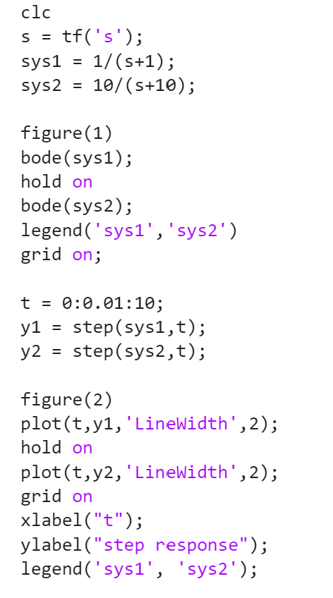
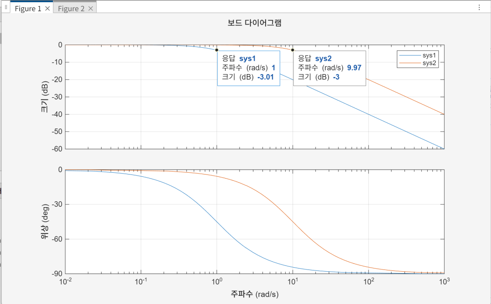
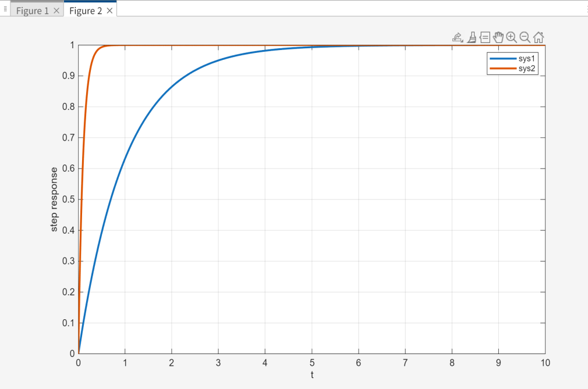
PI Control
“오차가크면 크게밀고 오차가작으면작게 민다” 따라서 반응이빠르고오차가 생기는즉시 대응
- 비례항만을이용해서제어하는것을P제어라고한다
- 이를PI제어 라고 한다.
-
시뮬링크에서saturation 블록으로설정
PI 제어란? 제어기의목적→ 오차(e)를0으로 만드는것. PI제어: 컨트롤러출력y(k) = 비례항출력yp(k) + 적분항출력yi(k) i) 비례항 yp(k) : yp(k) = Kp e(k) (이때Kp는비례이득) 즉, 오차에비례이득을곱한 것 할수 있다. 하지만 현실에서는마찰, 저항, 부하등 버티는힘이 있어비례항만으로는 오차가0이 아니 라어떤 값에수렴한다.(정상상태오차) ii) 적분항yi(k) : 오차를 시간에따라서 누적하고남아있는 오차를없애는역할 Yi(k-1) : 바로 직전샘플에서의 적분값(누적된결과) + 샘플시간x비례이득x오차 어떻게정상상태오차를 없애는가? 0보다 큰e(k)가남아있음→ yi가증가→출력이 커짐 → 시스템이움직임→ 오차가0이 될때 까지반 복 iii) 상한,하한 제어기출력이 현실의구동기한계(스로틀범위, 전압등)를넘지못하게 설정해놓는것.
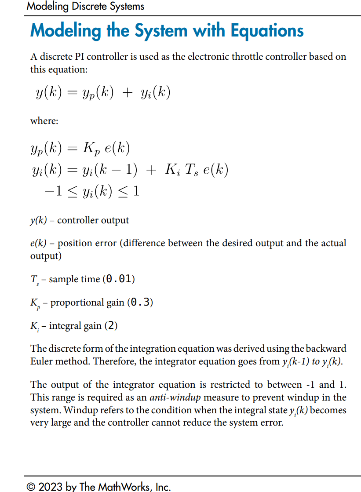
정정 (2026-08-10) — 적분항 수식과 기호
① 적분항에 곱하는 것은 적분이득이다. 원문: “Yi(k-1) : 바로 직전 샘플에서의 적분값 + 샘플시간 × 비례이득 × 오차” 올바른 식: 가 아니라 다. 실제로 뒤의 모델링 결과분석에서는 “Ki = 2, Ts = 0.01 이므로 매 틱 0.02”라고 로 계산하고 있으므로, 서술만 잘못 적힌 것으로 보인다.
② 제어기 출력은 보통 로 쓴다. 원문은 제어기 출력을 로 적었는데, 관례상 는 플랜트 출력이다. 뒤쪽 anti-windup 절에서는 , 을 쓰고 있어 표기가 섞였다.
③ “매 틱 0.02 증가”는 일 때만. 이므로, 단위 계단 입력이라 인 구간에서만 0.02다.
PI Control 모델링논리분석
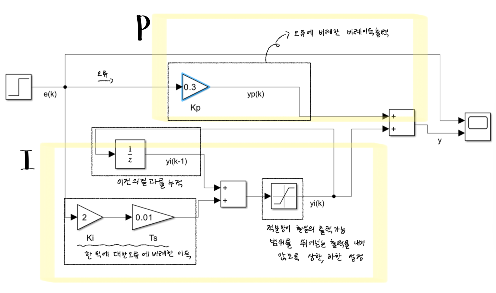
PI Control 모델링결과분석
- Ki = 2, Ts = 0.01 이므로 적분항은 매 틱 마다 =0.02만큼증가 하는것을 볼수 있다.
- 왜 입력(scope에선 e(k)로 표시)에 수렴하지 못하고 계속 증가하는가? :실제 폐루프 제어라면 y가 커지면서 플랜트가 움직이고 그 결과 e가 줄어들 어 0으로 수렴하고 적분 누적이 멈춰야 하지만 플랜트를 모델링하지 않고 제 어기만 모델링 했기 때문에 e가 줄어들지 않아 적분 누적이 멈추지 않았기 때문임을 알 수 있다.
- 플랜트 모델링을 추가했다면 출력이 입력에 수렴 했을 것 이라 예상된다.
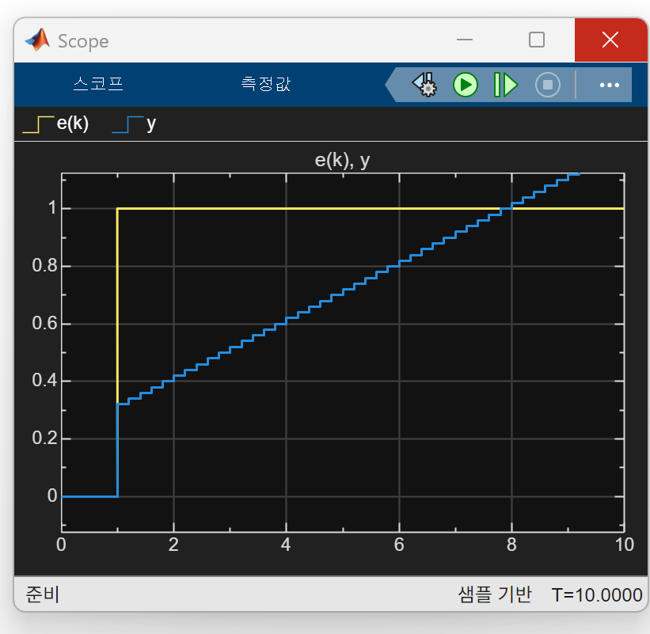
PID Control
- PID 제어란? : 위에 설명했던 PI제어에서 미분항 D 가 추가된 형태로 D항은 오차의 변화를 보고 미리 브레이크를 걸어서 오버슈트를 줄이는 역할을 한다.
- 수식에서 D항이 작동하는 원리 : PID제어 방정식은 다음과 같다. D항은 미분항이므로 오차 e(t)가 감소중이라면 D항의 부호는 음수가 되고 거기에 미분이득을 곱해 시스템에 제동을 걸어준다. ex) smd시스템의 댐퍼 역할
- 실무에서는 D항을 어떻게 이용하는가 : 미분은 고주파를 증폭시키기 때문에 입력신호에 센서 노이즈와 같은 고주파 신호가 있으면 de/dt가 엄청 튄다. 따라서 실무에서는 미분항에 저역 통과 필터를 적용한다. 즉 D항은 다음과 같다. .
PID 각 항이 시스템에 미치는 영향
개념 정리: PID Tuning
원본 PDF에서 표가 텍스트로 흩어져 나와 아래와 같이 재구성했다.
| 이득 ↑ | 상승시간 tr | 오버슈트 | 정착시간 ts | 정상상태오차 | 안정도 |
|---|---|---|---|---|---|
| Kp | 감소 | 증가 | 작은 변화 | 감소 (제거 아님) | 나빠짐 |
| Ki | 감소 | 증가 | 증가 | 제거 | 나빠짐, wind up 문제 |
| Kd | 작은 변화 | 감소 | 감소 | 영향 없음 | Kd 작을 때 개선 |
- 이상적인 PID 제어에서는 D항과 ess는 상호작용하지 않는다. D항은 오차의 변화율을 보는데 정상상태에서는 오차가 변하지 않으므로 기여가 0이다.
정정 (2026-08-10) — 표준 표와 다른 두 곳
원본은
Kp 증가 → 정착시간 증가,Kd 증가 → tr 증가로 적혀 있었다. 표준 표는 둘 다 “작은 변화” 로 본다. 반면Ki 증가 → tr 감소는 원본이 맞다. → PID Tuning
PI vs PD — 빠름 vs 정확함
| 강점 | 약점 | 용도 | |
|---|---|---|---|
| PD | 반응이 빠르고 오버슈트·진동이 적음 | ess가 남아 정확도가 떨어짐 | 로봇, 위치 제어 |
| PI | ess를 0으로 만듦 | D항이 없어 오버슈트·진동에 약함 | 온도, 압력 제어 |
위치 제어는 목표에 빨리, 흔들리지 않고 가는 게 중요하다 → D항. 온도·압력 제어는 느려도 되지만 설정값에 정확히 맞아야 한다 → I항.
- 시스템의 관성, 진동 등 출렁임이 있다면 D항의 비중을 늘려 PID 제어로 간다
PID Control 모델링논리분석
- Simlink에서 다음과 같이 PID제어기를 모델링 했고 각항이 출력에 어떤 영향을 미치는지 확인해 보겠다.
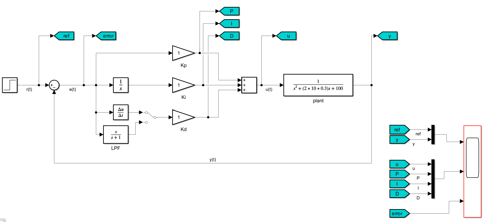
모델링 결과분석 — Kp 변화
Ki, Kd를 1로 고정시키고 Kp를 바꾸며 결과를 비교.
- Kp =500 Kp =10000
- ess는 매우 작은 것을 볼 수 있지만 오버슈트와 진동이 매우 큰 것을 볼 수 있다. 미분항을 이용해 오버슈트과 진동을 낮출 수는 있지만 너무 큰 비례 상수를 쓰면 시스템이 불안정해진다. 또한 요구출력 이 현실의 사양을 넘을 경우 제어는 실패 할 것으로 예상된다.
- kp=1000과 비교했을때 ess는 더 크지만 오버슈 트가 더 작은 것을 확인할 수 있다. 적분항을 이용해 ess를 줄이면 안정적이고 정확한 시스템이 될 것이라 예상된다.
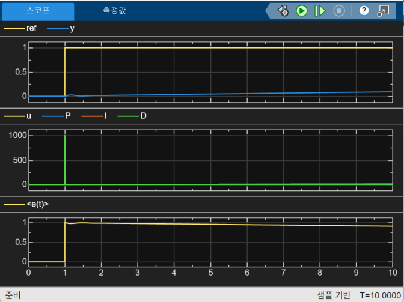
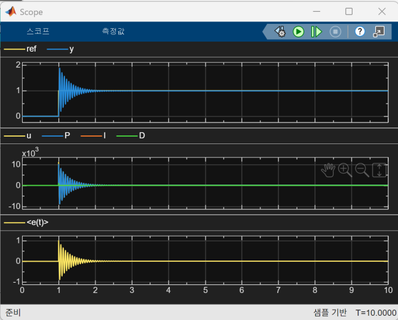
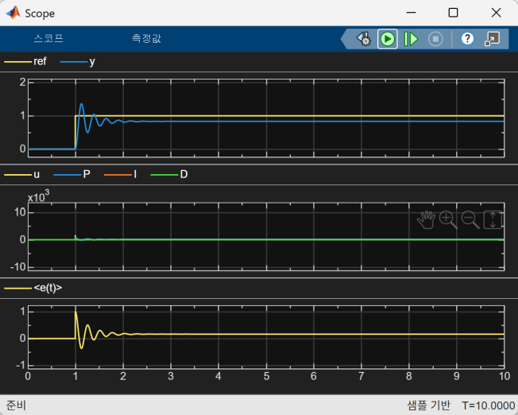
모델링 결과분석 — Ki 변화
Kp = 500, Kd = 1로 고정시키고 Ki를 바꾸며 결과를 비교.
- Ki =1000 Ki = 3000, 4000
- 기존의 Kp = 500 (반응속도, 진동이 양호하지만 ess존재) 에서 적분이득 1000을 적용하니 시간이 지남에 따라 시스템이 목표값에 수렴하는 모습을 볼 수 있다
- 처음엔 windup문제를 잘못이해해서 Ki = 4000 에서 포화 때문에 windup문제가 발생했고 saturation 블록으로 상한과 하한을 설정 하므로써 해결 가능하다고 이해했지만 windup 문제는 saturation블록으로 인한 포화 때문에 발생하므로 saturation블록이 없는 이 모델에서는 windup 문 제가 발생 할 수 없음을 알 수 있었다. 발산이유는 단지 KI를과도하게 올려서 임계값을 넘었고, 발산했다고 분석할 수 있다.
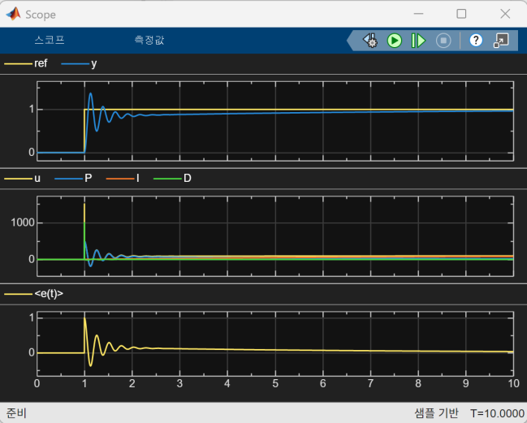

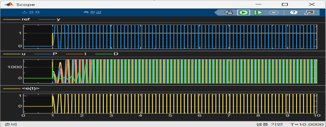
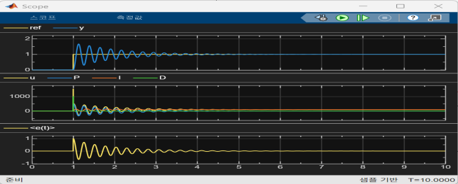
모델링 결과분석 — Kd 변화
Kp = 500, Ki = 1000으로 고정시키고 Kd를 바꾸며 결과를 비교.
- Kd =50 Kd = 1000
- 적절한 Kp, Ki, Kd를 설정해 반응속도가 빠르고 오버슈트가 작은 동시에 ess가 0 인 이상적인 제어 기를 모델링한 모습
- 너무 큰 미분이득을 설정해 과도한 감쇠가 걸린 모습이다. 또한 스탭에서 u(t)와 e(t)에 스파이크가 일어난 것도 확인 할 수 있다. 저역 통과 필터를 적용해 해결 할 수 있을 것으로 예상 된다.
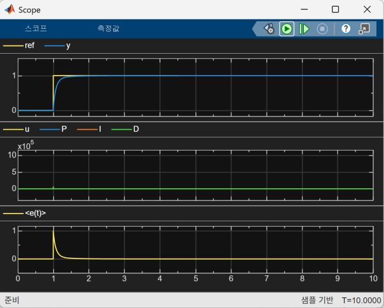

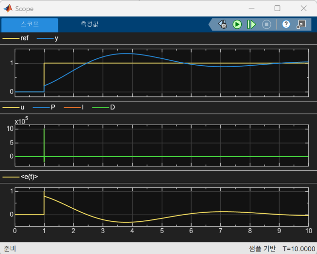
PID Controller 블록 · PID Tuner 파라미터
Simulink PID Controller 블록으로 모델링하고, PID Tuner가 자동 산출한 파라미터 값과 결과.
원문의 “조종기”는 RC 조종기가 아니라 PID Tuner를 가리킨다 (2026-08-10 확인). 같은 도구를 2026-03-27 에서 surge 제어기 튜닝에 다시 쓴다.
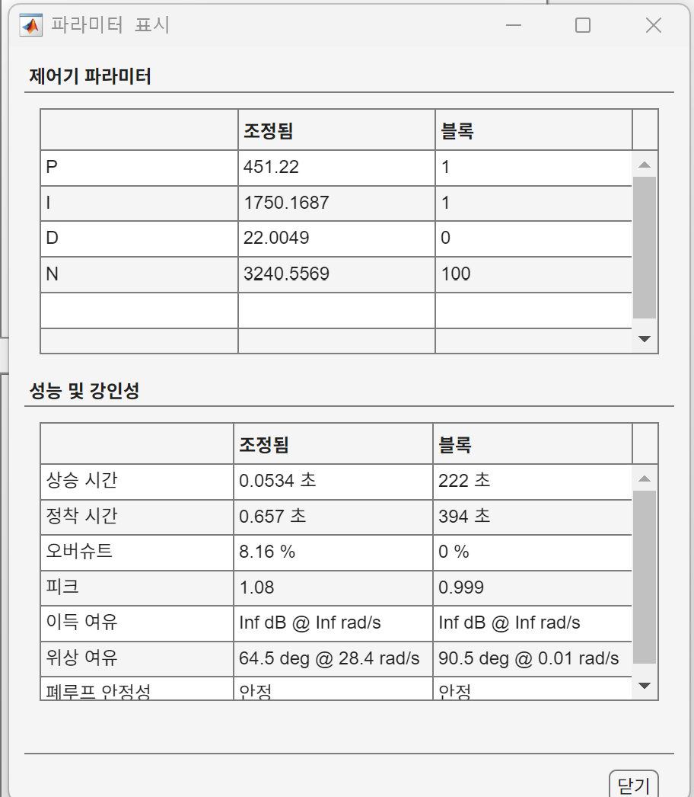
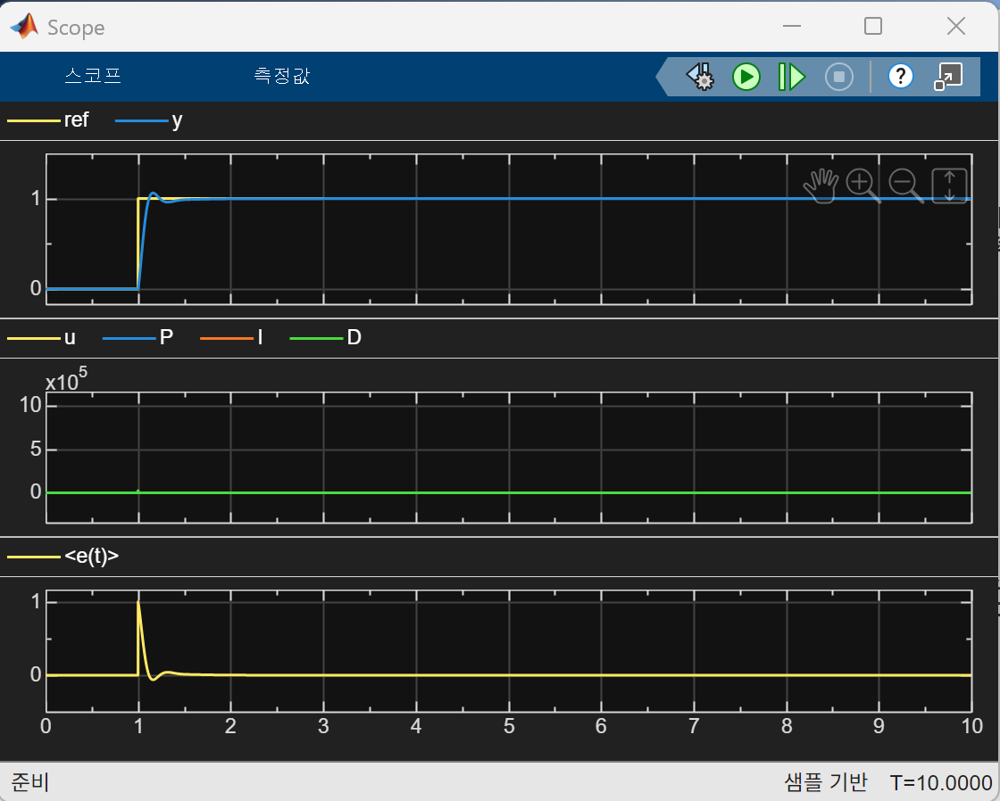
Anti-windup
개념 정리: Anti-windup — 이 주차 내용이 2026-03-27 스러스터 포화 대응으로 이어진다
적분 항 계속 누적 되는 중 → 목표에 도달(짐을 포기함)한 뒤에도 누적된 적분 항 때문에 오차가 빚 처럼 남아서 회복하는데 ‘시간이 오래 걸림’ (목표고도에 도달 했음에도 커진 출력이 줄어들지 않고
-
back-calculating : 포화전후 차이를 적분기에 다시 입력해 차이에 비례하여 반대부호로 적분기출력에 보정하는 방법.
-
포화가 없으면 u(sat) ←> u 는0 → 원래PID처럼 동작
-
포화가 있으면 차이가 커짐 →부호차이로 인해 xI를 줄여 보정
-
windup 문제는 왜 생기는가? : 현실의 액추에이터에는 물리적 한계가 있어서 상한과 하한이 걸린다. (모델에서는 saturation으로 표현) 이때 요구출력이 상한보다 크지만 상한에 걸려 누적된 적분이 해소 될때 까지 최대출력(상한)이 요구 되는 것을 포화 라고 한다. 포화 → e가 y보다 낮아서 같은 방향 (예를 들면 드론이 능력보다 무거운 짐을 들고 목표고도에 도달하려고 하는 상황, 목표고도에 도달하지 못해 출력은 계속 커지지만 짐 때문에 고도에 도달하지는 못함) 고도상승) 이것이 wind up이다.
-
어떻게 해결하는가? clamping : 포화에 도달 했을때 e의 부호를 판별해 부호가 같다면 적분기를 중지시키는 방법 out-limting : 적분 항 또는 제어출력 자체에 제한을 거는 방법
-
역 계산 anti-windup 논리 : 포화 전후의 차이를 적분기에 다시 입력하여 적분기가 현실의 보정치와 포화를 구분하도록 만든다. 적분항은 다음과 같다.Ki * xI, 이때 xI = e + Kaw( u(sat) - u), 모델링에서는 xI = e - Kaw( u - u(sat)) 각 항의 의미를 해석하면 e: 원래 적분기가 해야 할 일 ( u(sat) - u) : 원래 내보내고 싶던 값과 실제로 내보낸 값의 차이
Anti-windup이 적용된 PI Control 모델링논리분석
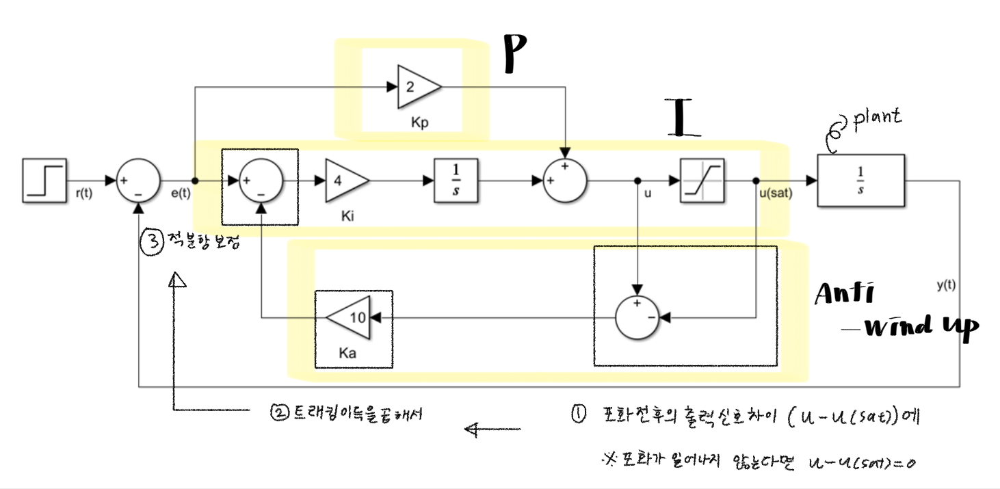
Anti-windup이 적용된 PI Control 모델링결과분석
- 기존모델링에 To workspace블록을 이용해서 다음과 같이 플롯 하였다.
Anti-windup 유무에 따른 제어기, 시스템 출력비교 Anti-windup 유무에 따른 e, u, up, ui, y 신호 비교
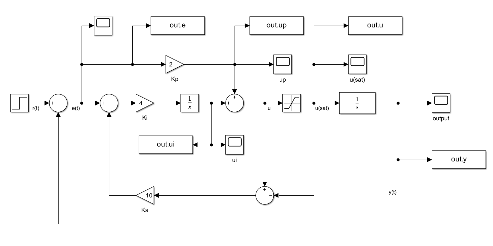
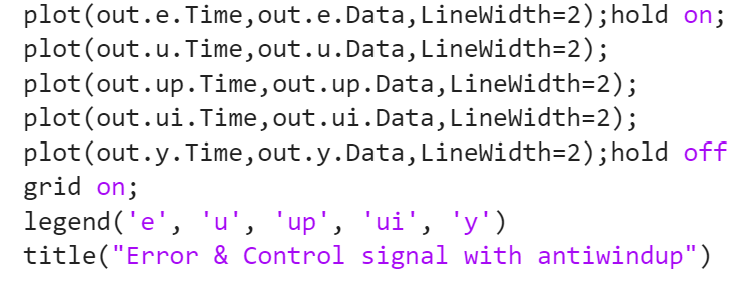
-
Anti-windup 유무에 따른 제어기, 시스템 출력비교
-
1에 상한이 걸려 출력은 1이상의 출력은 1로 제한 된다. Anti-windup이 적용된 모델은 적용되지 않은 모델보다 포화기간이 짧은것을 볼수 있다.
-
시스템 출력은Anti-windup이 적용된 모델이 그 렇지 않은 모델보다 오버슈트가 적은것을 볼 수 있다.
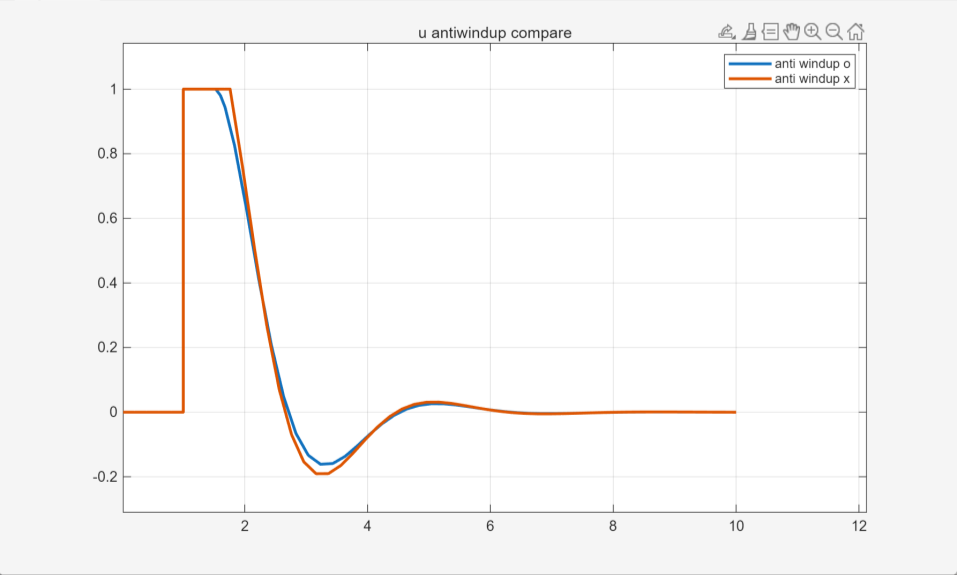
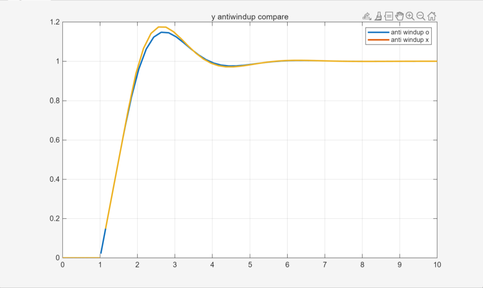
-
Anti-windup 유무에 따른 e, u, up, ui, y 신호 비교
-
step입력이 크지 않고 saturation 범위가 좁지 않기 때문에 포화가 극적으로 일어나지 않았다. 따라서 anti-windup 적용 전후에 적분 항 보정효과와 y(t)의오버슈트 감쇠효과가 도드라지진 않았지만 ui(보라) 신호를 분석해 보면 anti-windup이 적용된 모델의 경우 u신호 가 포화를 발생시키는 기간동안 반대신호를 만들어서 적분항을 보정하는 것을 확인할 수 있다.
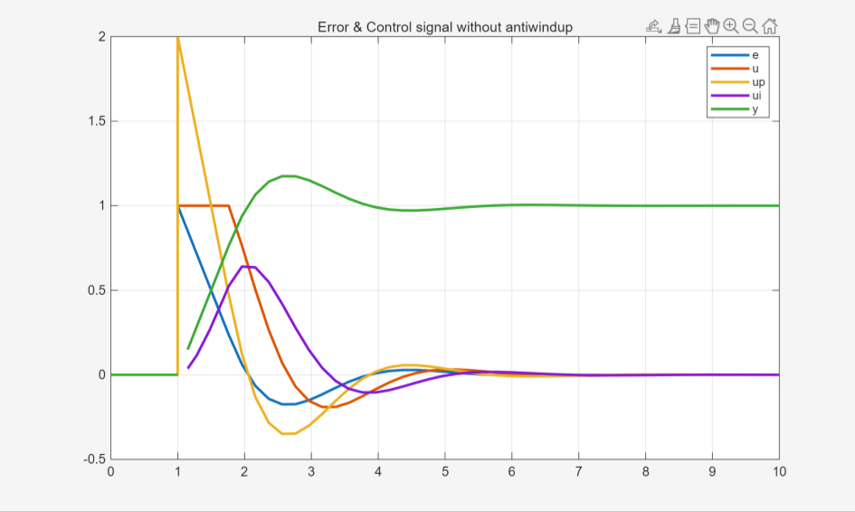
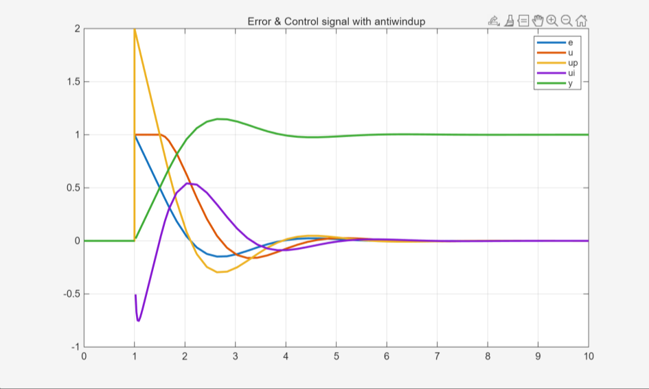
막힌 것 / Blockers
① windup을 잘못 이해하고 있었다
Ki = 4000에서 발산하는 것을 보고 “포화 때문에 windup이 발생했으니 Saturation 블록으로 상하한을 걸면 해결된다”고 이해했다.
거꾸로였다. windup은 saturation으로 인한 포화 때문에 발생한다. saturation 블록이 없는 이 모델에서는 windup 자체가 생길 수 없다. Ki = 4000의 발산은 단지 이득을 과도하게 올려 임계값을 넘긴 것 — 그냥 불안정이다.
| 증상 | 원인 | 처방 |
|---|---|---|
| 포화 후 회복이 느림, 큰 오버슈트 | windup | anti-windup |
| 그냥 발산 | 이득 과다 → 불안정 | 이득을 낮춘다 |
② 적분항이 수렴하지 않고 계속 증가했다
PI 제어기 모델링 결과에서 출력이 입력에 수렴하지 못하고 계속 증가했다.
원인: 플랜트를 모델링하지 않고 제어기만 모델링했기 때문. 실제 폐루프라면 y가 커지면서 플랜트가 움직이고 그 결과 e가 줄어들어 0으로 수렴하며 적분 누적이 멈춰야 한다. 제어기만 있으니 e가 줄어들 경로가 없어 적분이 무한히 쌓였다.
Ki = 2, Ts = 0.01 이므로 적분항이 매 틱 0.02씩 증가하는 것이 그대로 보인다.
할일 / Next
- Anti-windup 개념 분리 → Anti-windup
- PID 이득별 영향 정리 → PID Tuning
- D항 저역통과 필터 — Kd = 1000에서 본 스파이크를 실제로 잡아보기